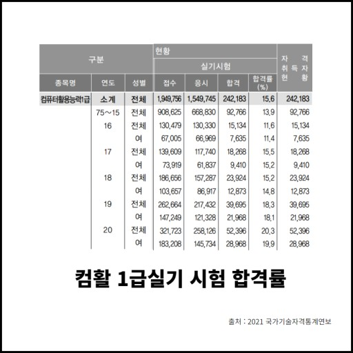

그럼 내가 제일 슬픈일은 뭔지 궁금하겠지?나는 올해 컴활을 다섯번 떨어졌다!!!! 누군가는 컴활5번 떨어진내게 너가 파개가 될 수 있을 것 같냐고 할지몰라 그렇지만 엑셀은 정말 거지같은 프로그램이야. 문과취업은 정말 쉣이야 그런 그지같은 자격증을 따야한다니 내가 컴활 따기 싫어서 개발자하는 줄 알아??? 그래 맞아 정처기를 따는게 더 빠를거야 아무튼 컴활은 쓰레기야
아니근데 20년대 합격률은 20프로가 된거야?? 나는 시험을 5번을 봤다네~~왜 아직 합격 못했냐고???????어쩔티비~~~